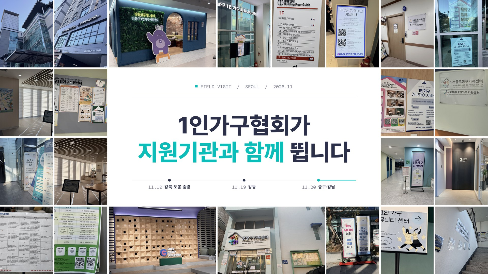

|
|
|
제23호 · 2026.11.25(수)
혼자 사는 삶을 위한
한 주의 정책·생활 소식
12월 정책포럼 · 법령 의견 제출 · 기관방문 · 1인가구 소식 5건
|
|
안녕하세요, 회원 여러분. 11월의 마지막 주입니다. 이번 KSA WEEKLY 제23호에는 12월 11일(금) 국회에서 여는 2026 1인가구 정책포럼 신청 안내를 다시 전합니다. 신청은 12월 4일(금)까지이며 좌석이 차면 일찍 마감합니다. 협회가 1인가구 관련 법령 개정안에 낸 의견과 지난주 기관방문 소식, 지난주 1인가구 소식 다섯 건도 함께 담았습니다. 날이 많이 추워졌습니다. 건강 잘 챙기시기 바랍니다.
|
|
협회 동향

12월 11일 2026 1인가구 정책포럼, 신청은 12월 4일까지입니다
2026 1인가구 정책포럼 「주거와 고립, 느슨한 연대로」의 참석 신청을 받고 있습니다. 좌석이 차면 12월 4일 전이라도 마감합니다. 1인가구의 주거와 고립, 느슨한 연대를 함께 이야기하는 자리입니다.
일시 2026. 12. 11.(금) 오후 2시
장소 국회의원회관 제1세미나실
KSA 1인가구협회 회원 여러분도 포럼에 함께하실 수 있습니다. 참석을 원하시는 분은 아래 버튼을 눌러 신청해 주시기 바랍니다. 국회의원회관에 들어가실 때는 신분증이 꼭 필요합니다.
신청 선착순, 12월 4일(금) 오후 6시 마감
문의 02-2635-9076 · info.ksaofficial@gmail.com
1인가구 관련 법령 개정안 5건에 협회 의견을 냈습니다
KSA 1인가구협회는 11월 18일 입법예고 중인 1인가구 관련 법령 개정안 5건에 의견을 냈습니다. 국회에 노인복지법 개정안 의견을 냈고, 국민참여입법센터에 보건복지부의 노인복지법 시행규칙과 사회보장급여법 시행령·시행규칙 개정안 등에 대한 의견을 냈습니다. 혼자 사는 사람이 제도에서 빠지지 않도록 앞으로도 입법예고를 살피고 의견을 전하겠습니다.

지난주에는 광진·노원부터 중구·강남까지 찾아갔습니다
KSA 1인가구협회는 10월부터 서울 곳곳의 1인가구 관련 기관을 직접 찾아가고 있습니다. 지난주 11월 17일에는 서울청년센터 광진과 광진·노원의 1인가구지원센터를, 19일에는 송파·동작·서초·강동의 1인가구지원센터를 찾아갔습니다. 20일에는 중구 1인가구지원센터와 강남구 1인가구커뮤니티센터를 방문했습니다. 방문한 기관에 협회를 소개하고 12월 1인가구 정책포럼을 안내해 드렸습니다. 협회의 걸음에 계속 응원 부탁드립니다.
협회 인스타그램에서 세미나 소식과 영상을 전합니다
협회 인스타그램에서 매달 여는 1인가구 세미나 소식과 1인가구 이야기를 담은 짧은 영상을 꾸준히 전하고 있습니다. 팔로우해 주시면 새 소식을 놓치지 않고 받아 보실 수 있습니다.
|
|
|
지난주 1인가구 소식 · 11/16~11/20
|
① 월세 세액공제 한도 1200만 원으로 늘리는 정부안
정부가 월세 세액공제 한도를 1,200만 원으로 늘리는 안을 냈습니다. 단독가구 근로장려금도 최대 180만 원으로 오르는 안입니다.
블로그에서 전문 보기 ›
|
② 1인가구 토요일 오전, 숲 나들이와 살림 교육
토요일 오전에 열리는 1인가구 프로그램 두 곳을 모았습니다. 시흥시가족센터 살림 교육은 11월 27일까지 선착순으로 신청을 받습니다.
블로그에서 전문 보기 ›
|
③ 원룸 관리비, 계약서에 항목별로 적어 두세요
원룸 관리비는 계약서에 항목별로 적어 두면 다툼을 줄일 수 있습니다. 서울시는 내년 하반기 청년 관리비 지원을 추진합니다.
블로그에서 전문 보기 ›
|
④ 동대문구 1인가구, 집배원이 생필품 들고 안부 묻는다
동대문구가 1인가구 지원 안내 책자를 냈습니다. 집배원이 생필품을 전하며 혼자 사는 주민의 안부를 확인합니다.
블로그에서 전문 보기 ›
|
⑤ 청년가구 집은 넓어지고 월세 부담은 17.4%
국토교통부 2025년도 주거실태조사에서 청년가구의 최저주거기준 미달 비율은 5.6%로 줄었습니다. 소득 가운데 월세로 나가는 비율은 17.4%였습니다.
국토교통부 보도자료 보기 ›
|
|
▶️ KSA 1인가구협회 유튜브
협회 소식을 영상으로도 전합니다
세미나 현장을 담은 쇼츠, 1인가구 현안에 대한 협회의 입장, 생활에 도움이 되는 팁 영상을 꾸준히 올리고 있습니다. 구독과 좋아요가 협회 활동에 큰 힘이 됩니다.
채널 주소: 유튜브에서 ‘KSA 1인가구협회’ 검색
|
|
|
더 많은 1인가구 소식은 협회 홈페이지에서 보실 수 있습니다.
|
|
|
KSA 1인가구협회 (Korea Small Household Association)
홈페이지 ksaofficial.co.kr · T. 02-2635-9076 · 본 메일은 협회 회원님께 발송되는 주간 소식지입니다.
※ 게재 정보는 발행 시점 기준이며 실제 일정·혜택은 변경될 수 있습니다.
문의하기 · info.ksaofficial@gmail.com
더 이상 소식을 받고 싶지 않으시면 수신거부 하실 수 있습니다.
|